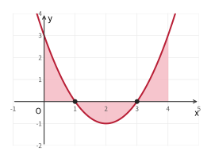
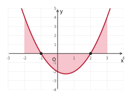
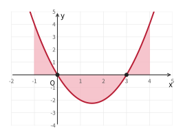

ホーム ＞ 数学II ＞ 積分法（定積分・面積）
別冊練習問題 2 の解答 絶対値を含む定積分
(1) 定積分 \(\displaystyle\int_{0}^{4}\left|x^{2} - 4 x + 3\right|dx\) の値を求めよ。
絶対値の中の符号を調べる
\(x^{2} - 4 x + 3=\left(x - 3\right) \left(x - 1\right)\)。\(x=1,\ 3\) が境目。
\(0\leqq x\leqq 1\) で \(f(x)\geqq0\)、\(1\leqq x\leqq 3\) で \(f(x)\leqq0\)、\(3\leqq x\leqq 4\) で \(f(x)\geqq0\)。
絶対値をはずして区間を分ける
\[\int_{0}^{4}\left|x^{2} - 4 x + 3\right|dx=\int_{0}^{1}\left(x^{2} - 4 x + 3\right)dx+\int_{1}^{3}\left\{-\left(x^{2} - 4 x + 3\right)\right\}dx+\int_{3}^{4}\left(x^{2} - 4 x + 3\right)dx\]不定積分を求める
\[\int\left(x^{2} - 4 x + 3\right)dx=\dfrac{x^{3}}{3} - 2 x^{2} + 3 x\]各区間の値
\[\dfrac{4}{3},\quad \dfrac{4}{3},\quad \dfrac{4}{3}\]（左の区間から順に）
合計
\[\dfrac{4}{3}+\dfrac{4}{3}+\dfrac{4}{3}=4\]
【答案】
\[4\]答
(2) 定積分 \(\displaystyle\int_{-2}^{3}\left|x^{2} - x - 2\right|dx\) の値を求めよ。
絶対値の中の符号を調べる
\(x^{2} - x - 2=\left(x - 2\right) \left(x + 1\right)\)。\(x=-1,\ 2\) が境目。
\(-2\leqq x\leqq -1\) で \(f(x)\geqq0\)、\(-1\leqq x\leqq 2\) で \(f(x)\leqq0\)、\(2\leqq x\leqq 3\) で \(f(x)\geqq0\)。
絶対値をはずして区間を分ける
\[\int_{-2}^{3}\left|x^{2} - x - 2\right|dx=\int_{-2}^{-1}\left(x^{2} - x - 2\right)dx+\int_{-1}^{2}\left\{-\left(x^{2} - x - 2\right)\right\}dx+\int_{2}^{3}\left(x^{2} - x - 2\right)dx\]不定積分を求める
\[\int\left(x^{2} - x - 2\right)dx=\dfrac{x^{3}}{3} - \dfrac{x^{2}}{2} - 2 x\]各区間の値
\[\dfrac{11}{6},\quad \dfrac{9}{2},\quad \dfrac{11}{6}\]（左の区間から順に）
合計
\[\dfrac{11}{6}+\dfrac{9}{2}+\dfrac{11}{6}=\dfrac{49}{6}\]
【答案】
\[\dfrac{49}{6}\]答
(3) 定積分 \(\displaystyle\int_{-1}^{4}\left|x^{2} - 3 x\right|dx\) の値を求めよ。
絶対値の中の符号を調べる
\(x^{2} - 3 x=x \left(x - 3\right)\)。\(x=0,\ 3\) が境目。
\(-1\leqq x\leqq 0\) で \(f(x)\geqq0\)、\(0\leqq x\leqq 3\) で \(f(x)\leqq0\)、\(3\leqq x\leqq 4\) で \(f(x)\geqq0\)。
絶対値をはずして区間を分ける
\[\int_{-1}^{4}\left|x^{2} - 3 x\right|dx=\int_{-1}^{0}\left(x^{2} - 3 x\right)dx+\int_{0}^{3}\left\{-\left(x^{2} - 3 x\right)\right\}dx+\int_{3}^{4}\left(x^{2} - 3 x\right)dx\]不定積分を求める
\[\int\left(x^{2} - 3 x\right)dx=\dfrac{x^{3}}{3} - \dfrac{3 x^{2}}{2}\]各区間の値
\[\dfrac{11}{6},\quad \dfrac{9}{2},\quad \dfrac{11}{6}\]（左の区間から順に）
合計
\[\dfrac{11}{6}+\dfrac{9}{2}+\dfrac{11}{6}=\dfrac{49}{6}\]
【答案】
\[\dfrac{49}{6}\]答